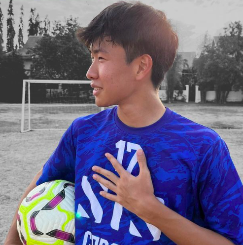
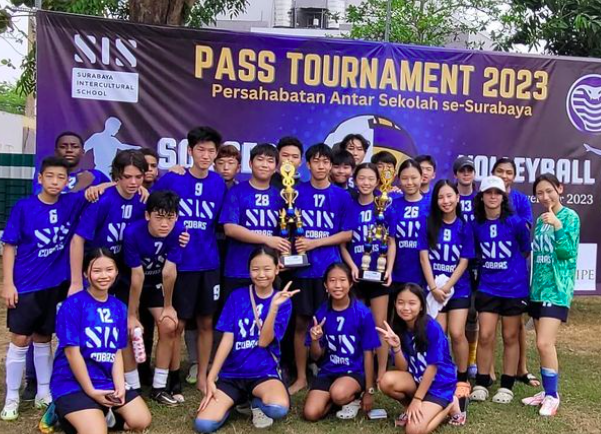

Student Testiomoni - Shun Sato
As a Grade 12 student and the IISSAC MVP in 2022, I have had an incredible journey representing my school at the Indonesian International Small Schools Activities Conference(IISSAC). Serving as a former captain, I learned the importance of leadership and teamwork, striving to create an inclusive environment where every teammate felt valued. Starting as the 2nd top assister and 2nd top goal scorer in this year's season is a testament to our collective effort and synergy. Competing in IISSAC has not only honed my athletic skills but also shaped my character, instilling resilience and sportsmanship that I will carry with me into the future.
Our Journey
The SIS Cobras Soccer Team was founded in 1971 with the mission to promote soccer and teamwork among students in Surabaya Intercultural School.
Notable Moments
- 2023: 3rd Place - PASS Tournament
- Sun Woo Kim - IISSAC MVP 
- 2022: Shun Sato - IISSAC MVP
- 2021: Pandemic
- IISSAC - Indonesia International Small School Activities Conference
- PASS Tournament
- Wesley Tournament
- Ciputra Cup